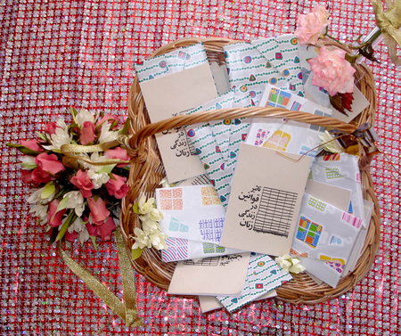

|
|

هدیه عروسی
شیرین کامی به تنهایی موقت است، باید همراه با آگاهی باشد تا دوام یابد!
ژینا مدرسی
جمعه13 دی 1387
بعضی از چهره های خندان، مهربان، صلح طلب و شاد اکثر مواقع تا هنگامی دوام دارند که همه چیز باب میل آنها باشد و همه ی کارها و امور روال سنتی خود را طی کند، وقتی بخواهی" نه" بگویی، از حقوق انسانی خودت دفاع کنی و خودت باشی همان چهره ها حالتهای مخالف، ناراضی، ناراحت و خشمگین را به خود می گیرند.
یکی از همین موقعیت ها مراسم عقد است، مراسم عقد من و همسرم بود، مهمانهای زیادی نشسته بودند، عاقد آمد، همه چیز انگار مرتب و خوب بود و کارها به همان روالی که گقتم پیش می رفت تا این که به مرحله ی شرایط ضمن عقد رسیدیم. من و همسرم از قبل در این موارد به توافق رسیده بودیم اما با مطرح کردن شرایط ضمن عقد در جمع فورا با مخالفتهای شدیدی از جانب بزرگترها، عاقد و دیگران مواجه شدیم. چهره ها عوض شدند، پچ پچ جمع را فرا گرفت و عاقد رو به پدربزرگم گفت: این حرفها در شان خوانده ی شما نیست!.. چین ابروها و پچ پچ ها، نگاه ها...
فورا یاد توصیه و راهکار های خانم ارزنی (حقوق دان و فعال زنان) افتادیم و خودمان دو نفری تصمیم گرفتیم که بعد از مراسم در یکی از دفتر خانه های اسناد رسمی حق ها را ثبت کنیم.
بعد از به پایان رسیدن این جدل پدرانمان وکیل شدند، پدرانمان دست در دست هم دادند و مراسم ها را به جا آوردند، شاهدهای مرد شهادت دادند و ما هم هزاران امضا دادیم! در طول بقیه ی مراسم به مردان نشسته در جمع، عاقد و حتی تعدادی از زنان میهمان فکر می کردم، دم گوش همسرم گفتم: انگیزه ام برای فعالیت بیشتر و بیشتر می شود! وقتی عاقد دفتر های بزرگ و کوچکش را بست و در حین خداحافظی ما را نصیحت می کرد به ریشه های این تفکر و سنتها می اندیشیدم! چند سال طول می کشد؟ چند نسل دیگر؟ چقدر فعالیت کافیست؟ کی می شود که زنان در اطمینان خاطر با آرامش و در شرایطی برابر زندگی کنند؟

پس از رفتن عاقد مادارنمان که هیچ کس در عقد احوالی از آنها نپرسید و هیچ دخل و تاثیری در این عقد نداشتند خودشان با هم دست دادند و گفتند دست ما هم درد نکند!
روز بعد روز برگزاری سفره عقد و قسمت رقص کردی و شادی بود و بزرگترها از سنتها و مراسم هایی که باید اجرا می شد حرف می زدند، یکی از همین مراسم ها این بود که هنگامی که فامیل ها و دوستان هدیه هاشان را به عروس و داماد می دهند آنها هم هدیه و یادگاری هایی مانند شاخه ای گل یا قند های تزیینی به میهمانها می دهند.
من و مادرم در فکر بهتر برگزار شدن مراسم و در عین حال مفیدی کار و تاثیراتش بودیم. دغدغه های شب گذشته ما را به سمت بسته ی دفترچه های کمپین برد! چه هدیه ای بهتر از این می تواند باشد؟! مگر می شود این دغدغه ها را فراموش کرد وقتی همیشه و هر روز به گونه های مختلف درگیرشان هستیم و لمسشان می کنیم؟! چشم هردویمان برق زد! خودش است، این دفترچه همان هدف ماست.
همان روز چندین برگ کاغذهای کادو خریدیم و مشغول کادو کردن جزوه ها شدیم. چند قند هم تزیین کردیم و در سبدی حصیری چیدیم. این دفترچه دغدغه ی همه ی ما زنان است اینگونه ما دغدغه هایمان را هدیه می دادیم و شریک می کردیم و همبستگی خودمان را با زنان و مردان مهمان در جمع و همه جا اعلام می کردیم.
شب در مراسم به هرکدام از مهمانها یک جزوه و یک قند تزیین شده که نماد شیرین کامیست می دادیم. قندها باید همراه با اگاهی از حقوق انسانیمان باشد وگرنه پایدار نخواهد بود ولی همراه با آگاهی این شیرین کامی ابدی خواهد شد!
همه کنجکاو بودند تا هرچه زودتر کاغذ کادوها را باز کنند و داخلش را ببینند.
آن شب با هیجان و خوشی و شیرینی برای ما گذاشت. صبح روز بعد وقتی گوشیمان را نگاه کردیم پر از smsهایی بود که همه نشان از شور و شوق بود. همه شوکه شده بودند و خوشحال بودند .
من و مادرم هم از خوشحالی در پوست خودمان نمی گنجیدیم. با خود گفتیم: حتی در اینگونه مراسم فعالیت نباید تعطیل شود. انگار شرایط انگیزه ها را بیشتر می کند!